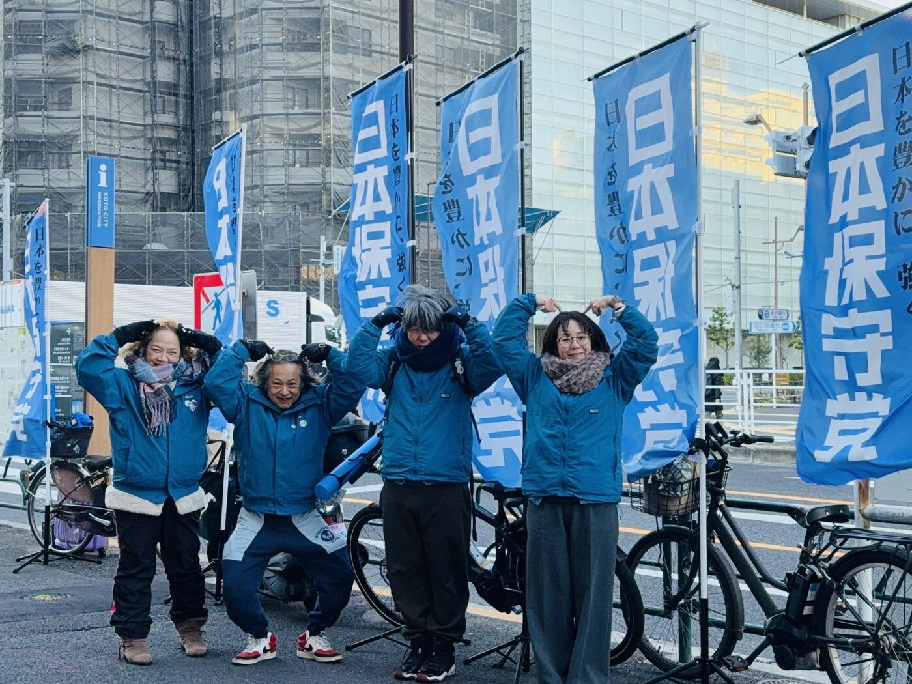

01
事実にもとづく、ひらかれた区政
情報公開請求などを通じて区の実態を確かめ、区民にわかりやすく伝えます。「把握していない」「公表していない」をそのままにせず、説明責任を果たす区政を求めます。
情報公開請求などを通じて区の実態を確かめ、区民にわかりやすく伝えます。「把握していない」「公表していない」をそのままにせず、説明責任を果たす区政を求めます。
税制見直しによる減収、ふるさと納税の流出、施設の建て替えラッシュ。今は元気な区の財政も、外からの力に弱い。影響額を数字で示すよう区に求めます。
国民健康保険料の納付状況や生活保護の受給状況など、区民の負担にかかわる統計の実態把握と公表を求め、誰もが納得できる公平な制度運営をめざします。
データセンター建設など住環境に直結する開発は、賛成・反対の前にまず十分な説明と安全性の検証を。区民の安全と安心を最優先にした行政運営を求めます。
能登半島地震では雑魚寝やプライバシー不足が課題になりました。パーティションや簡易ベッドの備蓄、女性・乳幼児のための空間など、開設初日から使える体制を確かめます。
声の大きい人のためではなく、日々懸命に暮らす区民のために。行政が見落としている課題に光を当て、皆さまの声を区政へ届けます。
今は元気。でも、外からの力に弱い。区の公開資料を読み込み、見えてきた6つの「穴」をやさしくまとめました。
23区の固定資産税が国の見直し対象に。区への交付金の元手そのものなのに、区は影響額の試算を出していません。
流出額は5年で約1.9倍、区民税の約1割。返礼品で取り戻せているのは年約3億円にとどまります。
令和8年度は取り崩し272億円に対し積み立て156億円。「増える一方」から「減る方向」に変わりました。
必要額は年平均216億円、過去10年の実績は214億円で余裕ゼロ。ピークは2033〜38年ごろ、地下鉄8号線の開業とも重なります。
扶助費918億円（前年比＋55億円）、人件費366億円（同＋20億円）。合わせて約1,300億円が義務的な支出です。
国保の赤字の穴埋め額、国籍別の国保・生活保護の状況、地下鉄8号線の区の負担額。見えない穴は、ふさげません。
まず、数字を出してもらおう。
出典：江東区「令和8年度江東区予算（案）概要」「令和7年度上半期の財政状況」「公共施設等総合管理計画（改訂）概要版」、東京都「令和8年度与党税制改正大綱に対する都の見解」、特別区長会「不合理な税制改正に対する特別区の主張」ほか。令和7・8年度末の数値は見込み・予算上の計画値です（2026年10月時点）。

一人でも多くの方に党の理念と政策を知っていただくため、区内の駅前などで街頭活動を続けています。
外国人住民の国民健康保険料の納付状況について区に情報公開請求を行い、区として十分な実態把握がなされていないことを確認しました。
住宅地に近い施設の安全性や周辺への影響について、住民の立場から十分な説明と検証を求めています。
生活保護の国籍別の状況や、避難所ごとのパーティション・簡易ベッドの備蓄数など、区の公表資料に載っていない数字を洗い出し、担当課への照会を進めています。
江東区での暮らしの中で感じていること、ぜひお寄せください。